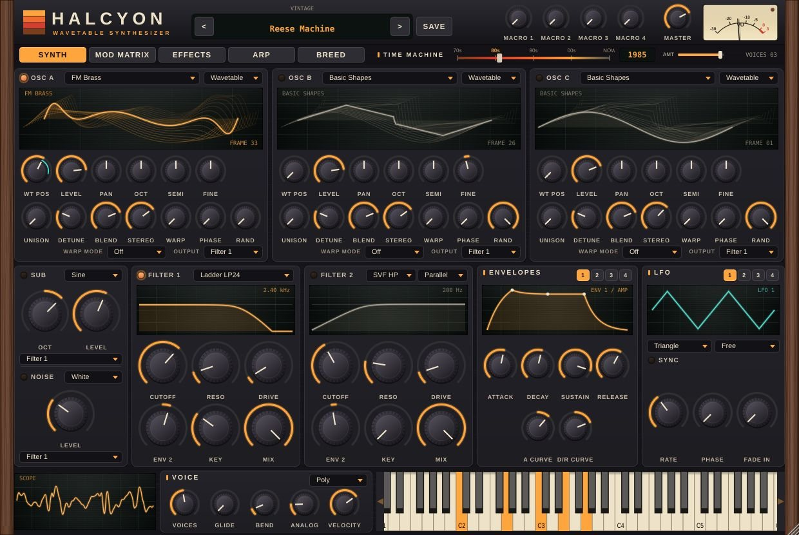

Halcyon
A polyphonic synth in the spirit of Serum, Vital and Diva, with wooden end cheeks, a needle VU meter and over 2,000 ready-to-play sounds.
0 downloads

Demo
Halcyon in action
Features
Everything inside
Drop a .vital or .SerumPreset file on Halcyon and play your sounds, wavetables and macros included. Load your own .wav wavetables too.
Wavetable, granular (load your own samples) or spectral with up to 96 partials, plus a sampler mode.
One slider sends the whole sound from the 70s to today: tape, 12-bit DACs, rave samplers…
Cross two presets, set the mutation, and 8 new sounds are born, already test-played and level-matched.
Ladder, "acid" diode, SVF, comb and formant, in series or parallel.
16-step arpeggiator, 16-slot mod matrix, 10 effects including Juno chorus and tape.
10 categories in the spirit of the synths that made history, from the 70s mono ladder synth to 80s FM keys and the 8-bit sampler.
Play it from an MPE controller with per-note bend, pressure and slide.
From the wooden Vintage to Midnight, Synthwave or the light Studio skin.
Listen
Classics presets, straight out of Halcyon
Specs
System requirements
- Version
- 1.3.0 · October 19, 2026
- macOS
- VST3, AU, Standalone · Apple Silicon + Intel, 10.13+
- Windows
- VST3, Standalone · Windows 10/11, 64-bit
- Linux
- VST3, LV2, Standalone · x86_64, glibc 2.35+
- Price
- Free, pay what you want
Get Halcyon
Enter your email and the Mac, Windows and Linux downloads open right away.
Download free0 downloads
Buy me a coffee ☕